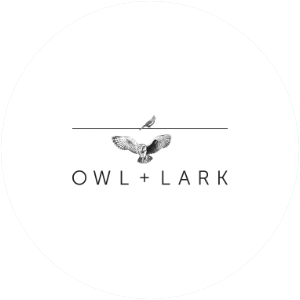
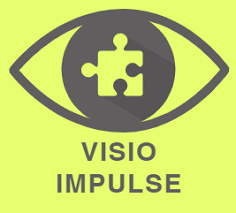
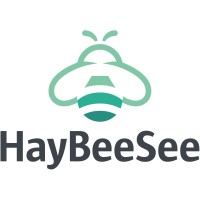

Timeline
-
University of York
PhD Student
2021 - -

Spectral Compute
GPU Software Engineer
2023 - -

Owl & Lark
Lead AI Engineer
2024 - -
Satis AI
Lead Computer Vision Engineer
2022 - 2023 -

Visio Impulse
Computer Vision Scientist
2020 - 2021 -

HayBeeSee
Robotics Engineer
2018 - 2020